Início / Mobilidade
Mobilidade: para andar, sentar e tomar banho com mais segurança
Cadeiras de rodas e muletas para venda e locação, andadores, bengalas, cadeiras de banho e barras de apoio. Modelos e cores podem variar conforme o estoque: consulte a loja.
Cadeiras de rodas
Manuais e motorizadas. Para venda e para locação. A correta escolha de uma cadeira de rodas é de suma importância para que se atinja um real ganho de qualidade de vida para quem tem restrição de mobilidade. Por isso vale conhecer os diferentes modelos antes de escolher.

Cadeira Tiger, até 90 kg

Cadeira Poty, até 120 kg

Cadeira Fit reclinável, até 100 kg

Cadeira Star Postural
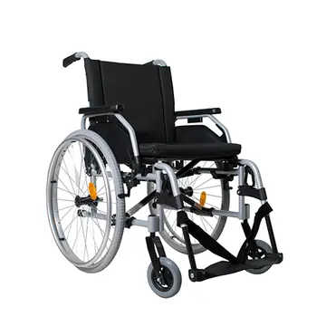
Cadeira Star M1, até 125 kg
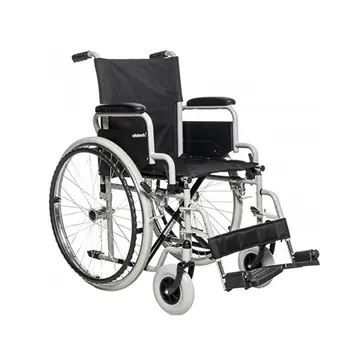
Cadeira Centro S1, até 100 kg
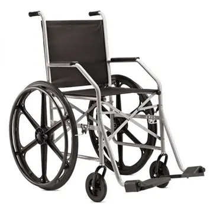
Cadeira básica, até 90 kg
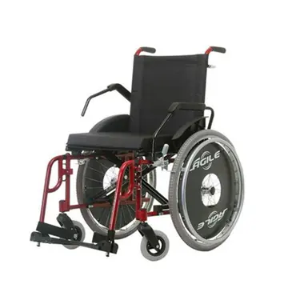
Cadeira Agile, até 130 kg
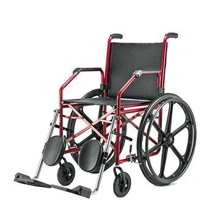
Cadeira 1012 com elevação de pernas
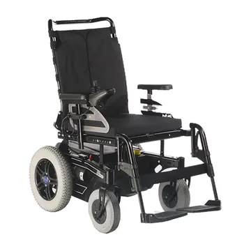
Cadeira B400, até 140 kg
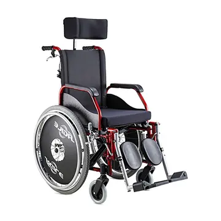
Cadeira Agile reclinável, até 120 kg
Fotos dos modelos. Modelos e cores podem variar conforme o estoque: consulte a loja.
Andadores
Modelos infantis, com e sem rodas. Para quem passou por cirurgia nos membros inferiores ou tem dificuldade para andar. O andador com rodas e assento é indicado para quem é mais ativo e precisa sentar para descansar.
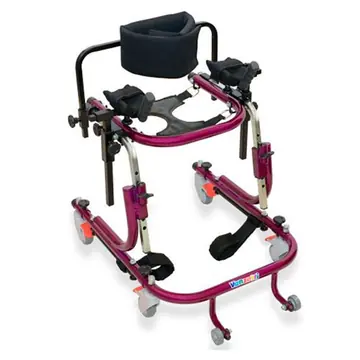
Andador Europa Luxo infantil
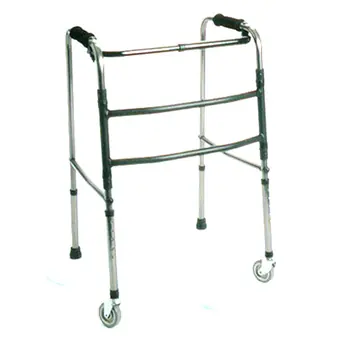
Andador 3 barras com rodas
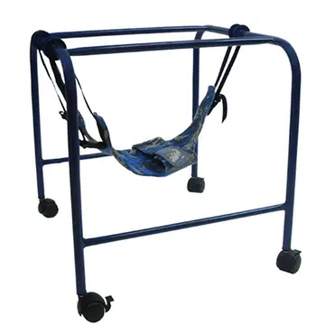
Andador Aranha infantil
Andador 2 barras
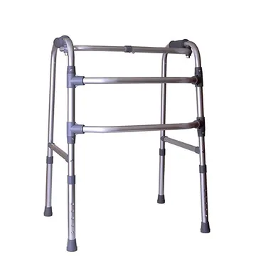
Andador 3 barras
Andador 2 barras com rodas
Fotos dos modelos. Modelos e cores podem variar conforme o estoque: consulte a loja.
Muletas
Canadense e axilar. Para venda e para locação. Servem para caminhar e também como apoio. Em geral são usadas em par, com dois pontos de apoio para o corpo.
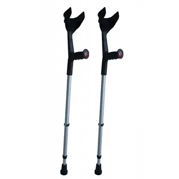
Muleta canadense
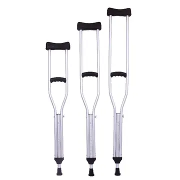
Muleta axilar P, M e G
Fotos dos modelos. Modelos e cores podem variar conforme o estoque: consulte a loja.
Bengalas
Madeira, alumínio e 4 pontas. Um apoio para caminhar, para quem tem dificuldade de locomoção pela idade, por uma fratura ou por outro motivo.
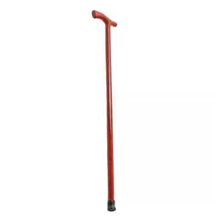
Bengala de madeira
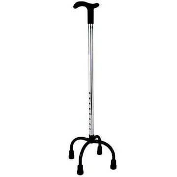
Bengala 4 pontas
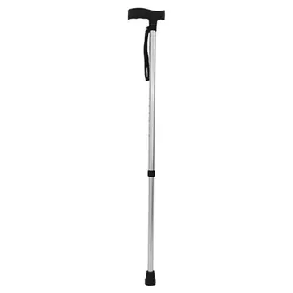
Bengala de alumínio em T
Fotos dos modelos. Modelos e cores podem variar conforme o estoque: consulte a loja.
Cadeiras de banho
Cadeiras, bancos, banquetas e assentos. Para levar a pessoa ao banheiro, dentro do box ou até o vaso sanitário, com freio para mais segurança. Também há banquetas e assentos.
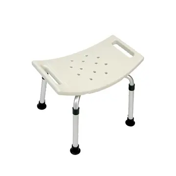
Banco para banho
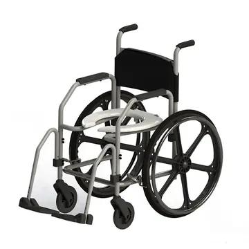
Cadeira de banho com rodas grandes
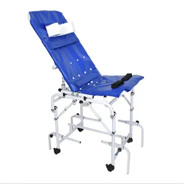
Enxuta juvenil, cadeira para banho
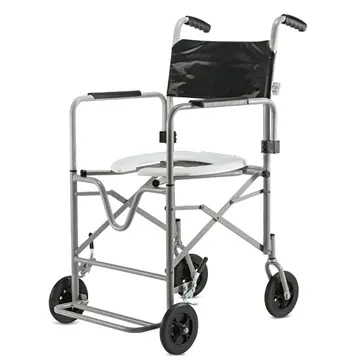
Cadeira de banho dobrável
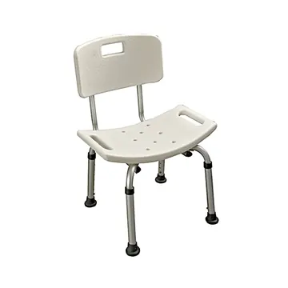
Banqueta para banho com encosto de alumínio
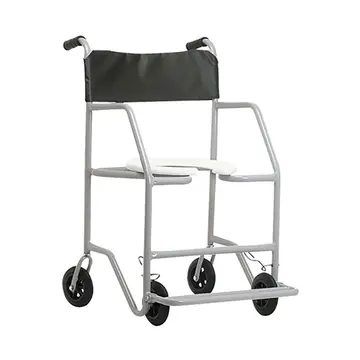
Cadeira Big, até 130 kg
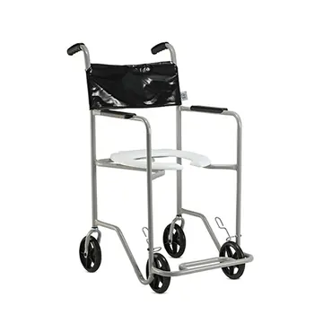
Cadeira Pop, até 80 kg
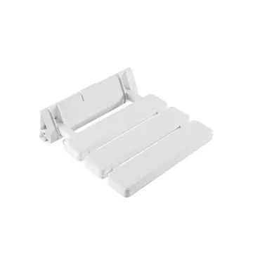
Assento retrátil para banho, até 120 kg
Fotos dos modelos. Modelos e cores podem variar conforme o estoque: consulte a loja.
Barras de apoio
Para banheiro, corredor e cama. Ajudam idosos, pessoas com deficiência física ou em reabilitação a se locomover com mais independência. Podem ser colocadas em banheiros, corredores, camas e outros lugares.
Barra curva
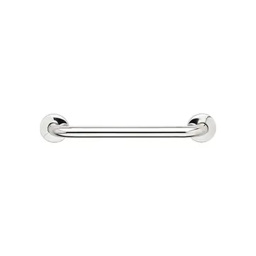
Barra de apoio 40 cm
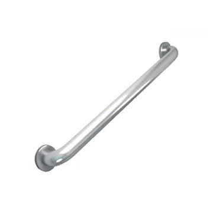
Barra de apoio 60 cm
Barra articulada
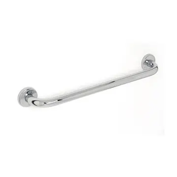
Barra de apoio 80 cm
Barra fixa
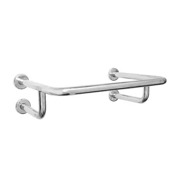
Barra para lavatório
Fotos dos modelos. Modelos e cores podem variar conforme o estoque: consulte a loja.
Não achou o modelo?
Pergunte pelo WhatsApp. Para locação de cadeira de rodas ou muletas, ligue e faça sua reserva.